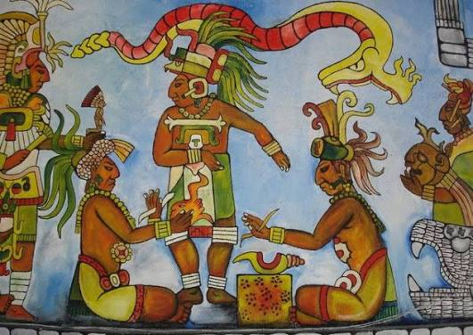
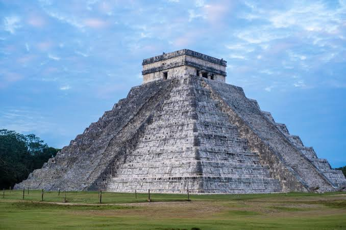
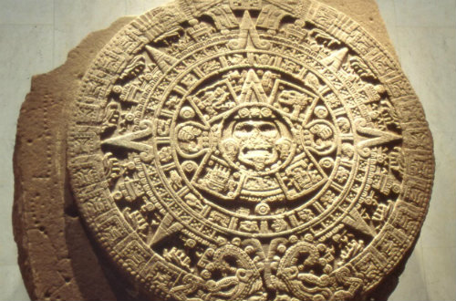

Quem foram os maias?
Os maias foram uma civilização pre-colombiana localizada na Mesoamérica. Os mais são conhecidos por suas estruturas impressionantes como pirâmides.
Sistema político
Os maias possuiam um sistema político teocrático e hereditário, e sua organização política era baseada em cidades-estados independentes. O seu líder era o Halach Uinic, e era considerado um representante divino, e também haviam sacerdotes que o auxiliavam na administração política.
Algumas imagens

Uma pintura representando os maias.

O Chichen Itzá, uma pirâmidade mundialmente famosa feita pelos maias.

Um calendário maia.